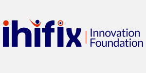
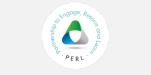
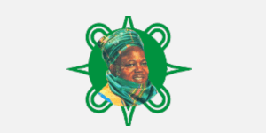
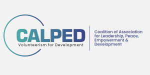
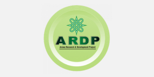
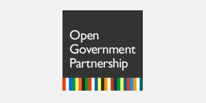

Implementing Partners
     Rationale
The advent of accessible digital technology has led governments’ and development organizations to begin seeking new ways of leveraging digital platforms and tools. This is towards increasing citizens’ participation, improving the quality of service delivery and enabling better development outcomes. The 2030 agenda for Sustainable Development recognizes that the spread of digital technology has great potential to accelerate human progress, bridge the digital divide and develop knowledge-driven societies.
Digital platforms have been a real accelerator for opening up government and mobilizing direct citizens’ engagement. These platforms have continued to empower more citizens with information, safe spaces and amplify their voices in pressing for broader causes that enable inclusive and sustainable development.
There is a need for governments, the private sector, civil society, international organizations, the technical and academic communities, and all other relevant stakeholders to integrate digital technology into their approaches to implementing projects so as to achieve speed, scale, scope, thereby promoting inclusiveness in governance.
Ihifix Innovation Foundation and partners believe that our democracy can be renewed through open governance and increased engaged citizens with digital technology playing a central role.
We must therefore mobilize a much stronger collective effort through broader dialogue, coalition, stronger leadership, and bottom-up citizens’ pressure so as to deliver better development outcomes leveraging digital technology.
Therefore, in line with the OGP commitment on Citizens Engagement, a one day Summit is to be organized to amplify the contribution of digital technology in deepening citizens’ participation, transparency, accountability and government’s responsiveness. Furthermore, draw from lessons from experiences that will be shared for adaptation, identify opportunities that needs to leveraged and initiate a community of practice to consolidate and sustain the gains.
Objectives
- Facilitate stakeholders’ experience-sharing to generate lessons for adaptation towards addressing blockages hindering meaningful citizens’ involvement and public accountability in the governance process.
- Brainstorm and document strategies towards increased leverage on digital technologies and data utilization for promoting good governance and sustainable socio-economic development.
- Share success story on how innovation and technology is deepening citizens’ participation, transparency and accountability in public governance.
- Initiate a tech community of practice in sustaining governance reforms.
Methodology
The one day Summit will feature brief documentary, presentations, panel discussions, demonstration and interactive sessions.